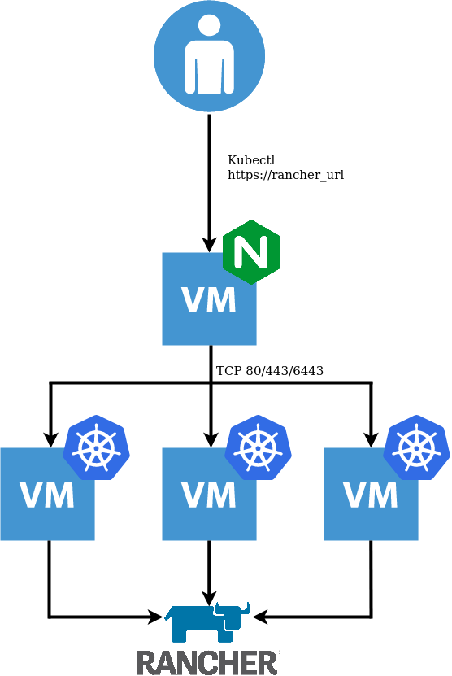

Automated deployment of K3s and Rancher on vSphere with Terraform
Previously, my local Rancher installs were based on RKE. However, since K3S is now a supported distribution, I decided to rebuild my environment leveraging it. Additionally, it was a good opportunity to automate the process with Terraform.
TL;DR
https://github.com/David-VTUK/Rancher-K3s-vSphere contains the Terraform code required to do this.
Quick note on K3S with Embedded DB
This installation method is currently experimental. Do not leverage it in production (yet). Towards the end of August 2020, we (Rancher) plan to replace it with embedded etcd as per the roadmap. I’m a fan of simplicity, therefore when v1.19 does come out, I plan to simply tear down and rebuild my cluster using this Terraform code. However, one could equally modify it to leverage an external DB for a more production-ready setup.
Resources Created
The aforementioned Terraform code will create:
- A single VM with NGINX installed acting as a Loadbalancer, forwarding TCP 80/443/6443 to the K3s Nodes
- Three VM’s which will form the K3s cluster with an embedded DB. The first of which is used to initialise the cluster
- Once the cluster is created, Cert-Manager and Rancher are installed which are probed for readiness.

Prerequisites
- Terraform version 0.13
- Prior to running this script, a DNS record needs to be created to point at the Loadbalancer IP address, defined in the variable
lb_address. - The VM template used must have the
Cloud-Init Datasource for VMware GuestInfoproject installed, which facilitates pulling meta, user, and vendor data from VMware vSphere’s GuestInfo interface. This can be achieved with:
curl -sSL https://raw.githubusercontent.com/vmware/cloud-init-vmware-guestinfo/master/install.sh | sh -
Or use the following Packer Template:
https://github.com/David-VTUK/Rancher-Packer/tree/master/vSphere/ubuntu_2004_cloud_init_guestinfo
Acquire Kubeconfig
- SSH to one of the K3s nodes
- Grab
/etc/rancher/k3s/k3s.yaml - Replace
server: https://127.0.0.1:6443with the IP address defined inlb_address